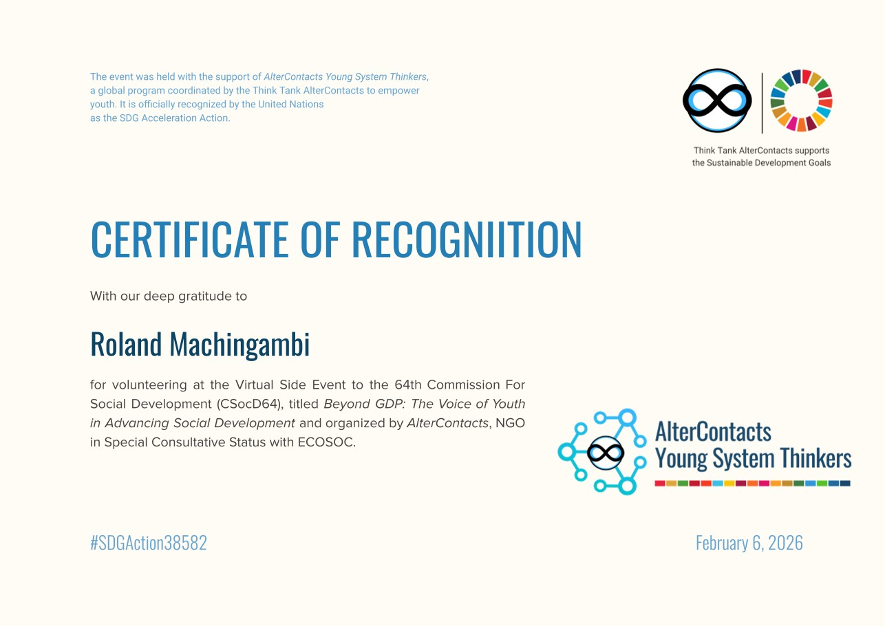

About
I’m Roland, based in Harare, Zimbabwe. I focus on building serverless applications on AWS and exploring agentic AI, turning ideas into practical, useful products.
Credentials
AWS Certified Cloud Practitioner
AWS Serverless Microcredential
AWS Data Streaming Demonstrated
AWS Databases for Agentic AI Demonstrated
AWS Application Networking Demonstrated
International Volunteering

Online Facilitator and Rapporteur
United Nations Volunteers · February 2026
Facilitated a breakout session at the UN 64th Commission for Social Development (CSocD64), synthesized international group discussions on the Beyond GDP framework into a structured report for NGO leadership, and moderated inclusive dialogue across a diverse group of international participants.